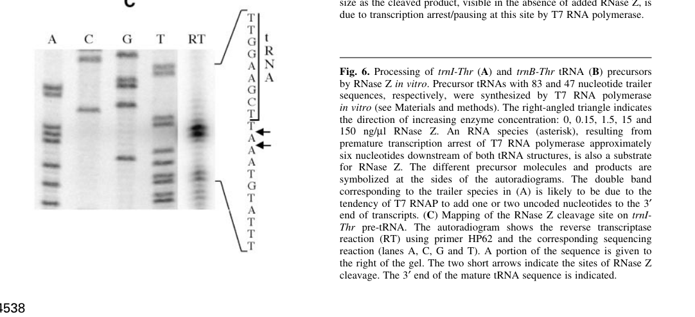

rnz encodes ribonuclease Z (RNase Z; tRNase Z; EC 3.1.26.11), a zinc-dependent endoribonuclease of the metallo-beta-lactamase superfamily with a binuclear Zn(2+) center. It performs 3'-end maturation of precursor tRNAs by endonucleolytically removing the 3' trailer, preferentially acting on CCA-less pre-tRNAs (with strong discrimination against precursors carrying an encoded 3'-CCA), generating a 3'-OH on the mature tRNA. No KT2440-specific experimental characterization is available; function is inferred with high confidence from the strongly conserved bacterial RNase Z family.
| GO Term | Evidence | Action | Reason |
|---|---|---|---|
|
GO:0008033
tRNA processing
|
IEA
GO_REF:0000104 |
MARK AS OVER ANNOTATED |
Summary: tRNA processing is true but less specific than tRNA 3'-end processing for RNase Z. Falcon deep research confirms the specific step is endonucleolytic removal of the 3' trailer from precursor tRNAs, which is captured by the more granular GO:0042780.
Reason: GO:0042780 (tRNA 3'-end processing) captures the specific 3'-end maturation step performed by RNase Z; the generic tRNA processing parent over-states the breadth of the enzyme's role.
Supporting Evidence:
file:PSEPK/rnz/rnz-uniprot.txt
tRNA 3'-
file:PSEPK/rnz/rnz-goa.tsv
GO:0008033 tRNA processing
file:PSEPK/rnz/rnz-deep-research-falcon.md
endonucleolytic removal of the 3′ trailer
|
|
GO:0008270
zinc ion binding
|
IEA
GO_REF:0000104 |
KEEP AS NON CORE |
Summary: Zinc ion binding is a correct cofactor annotation for RNase Z. UniProt records a binuclear Zn(2+) center (8 catalytic Zn-binding residues), and falcon deep research confirms RNase Z is a metallo-beta-lactamase superfamily zinc phosphodiesterase with a binuclear metal center.
Reason: The catalytic activity depends on Zn(2+) ions, but the core function is endoribonuclease activity rather than generic metal binding.
Supporting Evidence:
file:PSEPK/rnz/rnz-uniprot.txt
Binds 2 Zn(2+) ions
file:PSEPK/rnz/rnz-goa.tsv
GO:0008270 zinc ion binding
file:PSEPK/rnz/rnz-deep-research-falcon.md
metallo-β-lactamase superfamily
file:PSEPK/rnz/rnz-deep-research-falcon.md
binuclear metal center
|
|
GO:0016891
RNA endonuclease activity producing 5'-phosphomonoesters, hydrolytic mechanism
|
IEA
GO_REF:0000002 |
MARK AS OVER ANNOTATED |
Summary: This RNA endonuclease parent is true but less specific than 3'-tRNA processing endoribonuclease activity. The hydrolytic, 5'-phosphomonoester-producing mechanism described by GO:0016891 matches RNase Z, which leaves a 3'-OH on the mature tRNA and a 5'-monophosphate on the released trailer, but the substrate-specific child term is preferred.
Reason: GO:0042781 (3'-tRNA processing endoribonuclease activity) captures the tRNA 3'-processing substrate and product context and is the appropriate specific molecular function.
Supporting Evidence:
file:PSEPK/rnz/rnz-uniprot.txt
processing endonuclease activity
file:PSEPK/rnz/rnz-goa.tsv
GO:0016891 RNA endonuclease activity
file:PSEPK/rnz/rnz-deep-research-falcon.md
5′-monophosphate
|
|
GO:0042780
tRNA 3'-end processing
|
IEA
GO_REF:0000108 |
ACCEPT |
Summary: tRNA 3'-end processing is the correct biological process for RNase Z. Falcon deep research confirms RNase Z performs 3'-end maturation of precursor tRNAs, acting after RNase P 5' leader removal in the canonical tRNA maturation pathway.
Reason: RNase Z removes 3' trailers from precursor tRNAs to generate the mature tRNA 3' end; this is the well-conserved biological process for the bacterial RNase Z family.
Supporting Evidence:
file:PSEPK/rnz/rnz-uniprot.txt
removing a 3'-trailer from precursor tRNA
file:PSEPK/rnz/rnz-goa.tsv
GO:0042780 tRNA 3'-end processing
file:PSEPK/rnz/rnz-deep-research-falcon.md
3′-end maturation of precursor tRNAs
file:PSEPK/rnz/rnz-deep-research-falcon.md
RNase P cleavage must precede RNase Z
|
|
GO:0042781
3'-tRNA processing endoribonuclease activity
|
IEA
GO_REF:0000120 |
ACCEPT |
Summary: 3'-tRNA processing endoribonuclease activity is the core molecular function of RNase Z. Falcon deep research confirms this family is best annotated as a tRNA 3'-trailer endoribonuclease (EC 3.1.26.11) that preferentially acts on CCA-less pre-tRNAs, with strong discrimination against precursors that already carry an encoded 3'-CCA (the CCA antideterminant).
Reason: UniProt assigns EC 3.1.26.11 and describes endonucleolytic cleavage of precursor tRNA 3' trailers; falcon deep research corroborates this as the conserved, high-confidence molecular function of the RNase Z family.
Supporting Evidence:
file:PSEPK/rnz/rnz-uniprot.txt
EC=3.1.26.11
file:PSEPK/rnz/rnz-uniprot.txt
removing extra 3' nucleotides
file:PSEPK/rnz/rnz-goa.tsv
GO:0042781 3'-tRNA processing endoribonuclease activity
file:PSEPK/rnz/rnz-deep-research-falcon.md
is best annotated as a **tRNA 3′-trailer endoribonuclease**
file:PSEPK/rnz/rnz-deep-research-falcon.md
CCA-less pre-tRNAs with 3′ trailers
|
Q: Does KT2440 RNase Z process all tRNA 3' trailers or a restricted subset with additional nuclease redundancy?
Q: How many P. putida KT2440 tRNA genes encode CCA genomically, and does this constrain the in vivo contribution of RNase Z to bulk tRNA 3'-maturation (as observed for E. coli ElaC, where most tRNAs are CCA-encoded and RNase Z may instead act as a backup endonuclease in mRNA decay)?
Experiment: Map precursor and mature tRNA 3' ends in wild-type and rnz knockout strains to identify RNase Z-dependent substrates.
Type: tRNA end-mapping
The research report should be a detailed narrative explaining the function, biological processes, and localization of the gene product. Citations should be given for all claims.
You should prioritize authoritative reviews and primary scientific literature when conducting research. You can supplement
this with annotations you find in gene/protein databases, but these can be outdated or inaccurate.
We are specifically interested in the primary function of the gene - for enzymes, what reaction is catalyzed, and what is the substrate specificity? For transporters, what is the substrate? For structural proteins or adapters, what is the broader structural role? For signaling molecules, what is the role in the pathway.
We are interested in where in or outside the cell the gene product carries out its function.
We are also interested in the signaling or biochemical pathways in which the gene functions. We are less interested in broad pleiotropic effects, except where these elucidate the precise role.
Include evidence where possible. We are interested in both experimental evidence as well as inference from structure, evolution, or bioinformatic analysis. Precise studies should be prioritized over high-throughput, where available.
The UniProt record provided (Q88FQ4) describes Ribonuclease Z (RNase Z; tRNA 3′ endonuclease; EC 3.1.26.11) encoded by rnz (ordered locus PP_4033) in Pseudomonas putida KT2440. Using the available literature retrieval tools, I did not recover primary publications that directly mention PP_4033, Q88FQ4, or P. putida KT2440 rnz by name/locus tag; therefore, the gene’s functional annotation in this report is based on high-confidence inference from the conserved bacterial RNase Z (tRNase Z/ElaC) family, anchored by (i) biochemical characterization of bacterial RNase Z in Bacillus subtilis and (ii) authoritative mechanistic/structural work on RNase Z homologs including 2024 cryo-EM studies of ELAC2 (RNase Z long form). No contradictory alternative meaning of the gene symbol “rnz” was encountered in the retrieved corpus; however, organism-specific phenotypes, essentiality, and regulation for KT2440 rnz remain undocumented here due to lack of direct sources. (pellegrini2003endonucleolyticprocessingof pages 3-5, kushner2007messengerrnadecay pages 15-16, gese2024structuralbasisof pages 1-2, xue2024structuralinsightsinto pages 1-2)
RNase Z is an endoribonuclease that performs 3′-end maturation of precursor tRNAs (pre-tRNAs) by endonucleolytic removal of the 3′ trailer, producing a mature tRNA 3′ end ready for CCA addition when the CCA is not genomically encoded. (pellegrini2003endonucleolyticprocessingof pages 3-5, pellegrini2003endonucleolyticprocessingof pages 1-2)
Mechanistically, RNase Z cleavage generates a mature tRNA with a 3′-OH and releases a trailer fragment bearing a 5′-monophosphate, consistent with a metal-dependent hydrolytic endonuclease reaction. (pellegrini2003endonucleolyticprocessingof pages 3-5)
In bacterial RNase Z biochemical mapping (Firmicute model), RNase Z cleaves at or near the discriminator base, commonly one or two nucleotides downstream in vitro, and is inferred to cleave directly 3′ to the discriminator base in vivo. (pellegrini2003endonucleolyticprocessingof pages 7-8, pellegrini2003endonucleolyticprocessingof pages 3-5)
A defining feature of RNase Z is strong discrimination against pre-tRNAs that already contain an encoded 3′-CCA. In B. subtilis, pre-tRNAs whose 3′ ends contain encoded CCA are very poor substrates in vitro and are not substrates in vivo, supporting the concept that CCA is an antideterminant that prevents futile cycles of CCA removal and re-addition. (pellegrini2003endonucleolyticprocessingof pages 7-8, pellegrini2003endonucleolyticprocessingof pages 3-5, pellegrini2003endonucleolyticprocessingof pages 10-10)
Quantitatively, replacing a native trailer with CCA can reduce activity dramatically; for one kinetic comparison, a TAA-containing substrate exhibited Vmax 52.4 and Km 0.97 μM, whereas the corresponding CCA-containing substrate exhibited Vmax 0.23 and Km 2.4 μM, consistent with substantial catalytic and binding penalties when CCA is present. (pellegrini2003endonucleolyticprocessingof pages 5-7, pellegrini2003endonucleolyticprocessingof pages 3-5)
A 2024 structural analysis of RNase Z family function (human mitochondrial ELAC2 within its complex) refines the antideterminant concept: the first C of CCA gives the strongest antideterminant effect, a C or U at position 2 enhances it, and position 3 contributes little, consistent with sequence-dependent suppression of productive catalysis when CCA is present. (gese2024structuralbasisof pages 7-9)
tRNA maturation requires both 5′ leader and 3′ trailer removal. Biochemical evidence in bacteria shows that long 5′ leaders impair RNase Z cleavage, implying that for many substrates RNase P cleavage must precede RNase Z. Specifically, 5′ extensions of 33–66 nt required roughly 10–100× more enzyme for efficient RNase Z processing, indicating leader length is a major determinant of pathway order. (pellegrini2003endonucleolyticprocessingof pages 5-7, pellegrini2003endonucleolyticprocessingof pages 1-2)
A 2024 structural study provides a general mechanistic rationale for ordered processing (shown for mitochondrial RNase Z/ELAC2): a C-terminal helix would sterically clash with 5′-unprocessed pre-tRNA, enforcing 5′ processing prior to 3′ processing; while this is an ELAC2 (long-form) system, it supports the broader principle that RNase Z family enzymes can enforce maturation order through substrate geometry constraints. (gese2024structuralbasisof pages 7-9)
RNase Z proteins belong to the metallo-β-lactamase superfamily and are frequently described as zinc-dependent phosphodiesterases with a binuclear metal center; in E. coli, RNase Z (ElaC) is described as a binuclear zinc phosphodiesterase. (kushner2007messengerrnadecay pages 15-16)
RNase Z occurs as short (RNase ZS; ~280–360 aa) and long (RNase ZL; ~750–930 aa) forms; bacteria typically encode the short form, while eukaryotic RNase ZL (e.g., human ELAC2) contains duplicated domains in which catalytic motifs are retained primarily in the C-terminal domain. (gese2024structuralbasisof pages 1-2, xue2024structuralinsightsinto pages 1-2)
RNase Z acts on pre-tRNAs generated by transcription and therefore functions in the compartment where bacterial tRNA maturation occurs—the cytosol/nucleoid region of the bacterial cell. While none of the retrieved sources directly reports P. putida RNase Z localization, the enzyme’s role in processing cellular pre-tRNAs implies an intracellular, cytosolic localization (not secreted; not periplasmic). This statement is based on pathway logic supported by RNase Z’s described function in tRNA maturation. (pellegrini2003endonucleolyticprocessingof pages 3-5, pellegrini2003endonucleolyticprocessingof pages 1-2)
Two independent 2024 cryo-EM studies substantially advanced mechanistic understanding of RNase Z family enzymes by capturing apo and substrate-bound states and clarifying how the 3′ trailer is guided into the active site.
Xue et al. (published Nov 2024) determined cryo-EM structures of full-length human ELAC2 in apo, pre-tRNA–bound, and tRNA-bound states, and implicated C-terminal helix rearrangement in “feeding” the 3′ trailer into the cleavage site. Reported map resolutions were 3.16 Å (apo), 3.64 Å (pre-tRNA bound), and 4.39 Å (tRNA bound), providing quantitative structural constraints on RNase Z family substrate interactions. URL: https://doi.org/10.1093/nar/gkae1014 (xue2024structuralinsightsinto pages 1-2, xue2024structuralinsightsinto pages 3-4)
Gesé & Hällberg (published May 2024) resolved multiple cryo-EM structures of the mitochondrial RNase Z complex and rationalized both substrate selection and processing order. They report that with a 3′-CCA present, the substrate 3′ end can sit in a non-productive conformation, e.g., the mt-tRNAHis 3′ end being 13.4 Å from the catalytic Zn2+ in the observed state; this supports a structural basis for the CCA antideterminant (i.e., preventing cleavage after CCA addition). URL: https://doi.org/10.1038/s44318-024-00297-w (gese2024structuralbasisof pages 7-9, gese2024structuralbasisof pages 1-2)
Although these two studies focus on eukaryotic RNase ZL systems, they inform bacterial RNase Z annotation by clarifying conserved principles: elbow clamping, electrostatic backbone interactions, trailer feeding, and geometric enforcement of processing order. (xue2024structuralinsightsinto pages 1-2, gese2024structuralbasisof pages 7-9)
A 2024 review on tRNA structural recognition highlights RNase Z/ELAC engagement via a tail domain that clamps the tRNA elbow and emphasizes that 3′ CCA acts as a robust antideterminant preventing futile cycles; it also notes that the precise molecular basis (binding versus catalysis) has not been fully resolved in all systems—an expert perspective that frames ongoing open questions. (published Jan 2024) URL: https://doi.org/10.1016/j.chembiol.2023.12.008 (zhang2024recognitionofthe pages 5-6)
A practical biotechnology use-case is reported in the context of type I CRISPRi in archaea, where crRNA maturation can be engineered to be Cas6b-independent by using endogenous tRNA processing enzymes RNase P and tRNase Z to generate mature crRNAs more conveniently. This demonstrates real-world repurposing of conserved RNA processing enzymes (including RNase Z family members) as programmable RNA-processing parts in genome engineering pipelines. (published Dec 2023) URL: https://doi.org/10.3934/microbiol.2023040 (xu2023typeicrisprcasmediated pages 11-13)
Functional partitioning across bacteria: An authoritative EcoSal Plus review notes that in E. coli—where most tRNA precursors already encode CCA—the physiological role of RNase Z (ElaC) in tRNA maturation is unclear; instead, RNase Z can act as a backup endonuclease in mRNA decay, underscoring that RNase Z’s physiological role can vary across bacteria depending on whether tRNAs are genomically CCA-encoded. This is important when annotating P. putida rnz: the enzyme is strongly conserved, but the relative contribution to bulk tRNA 3′ maturation may depend on the genomic architecture of P. putida tRNA genes. (published Dec 2007) URL: https://doi.org/10.1128/ecosalplus.4.6.4 (kushner2007messengerrnadecay pages 15-16)
Open mechanistic question (binding vs catalysis): The 2024 review emphasizes that while CCA is a robust antideterminant, the exact mechanism (inhibiting binding vs inhibiting catalytic geometry) has been incompletely resolved across systems. The 2024 mitochondrial complex structures provide one structural route (non-productive geometry and distance from catalytic Zn2+), suggesting the answer can be system-dependent. (zhang2024recognitionofthe pages 5-6, gese2024structuralbasisof pages 7-9)
Kinetic impact of encoded CCA (bacterial RNase Z): In B. subtilis RNase Z assays, a representative comparison reports Vmax 52.4; Km 0.97 μM (TAA trailer) versus Vmax 0.23; Km 2.4 μM (CCA trailer), illustrating strong suppression of cleavage by CCA. (pellegrini2003endonucleolyticprocessingof pages 5-7, pellegrini2003endonucleolyticprocessingof pages 3-5)
Leader length constraint (bacterial RNase Z): RNase Z processing was strongly inhibited by long 5′ leaders, requiring roughly 10–100-fold more enzyme for 33–66 nt leaders. (pellegrini2003endonucleolyticprocessingof pages 5-7)
Quantitative structural metrics (2024 cryo-EM, ELAC2): Reported cryo-EM map resolutions for ELAC2 states: 3.16 Å (apo), 3.64 Å (pre-tRNA-bound), 4.39 Å (tRNA-bound). (xue2024structuralinsightsinto pages 3-4)
Structural geometry supporting CCA antideterminant (2024): With 3′-CCA present, the mt-tRNAHis 3′ end is reported 13.4 Å from catalytic Zn2+ in the observed non-productive state. (gese2024structuralbasisof pages 7-9)
System-wide efficiency statement (2024 mitochondrial platform): The TRMT10C/SDR5C1 platform reportedly enhances ELAC2 3′ processing efficiency for 17 of 22 human mt-tRNAs, indicating broad but not universal dependence on accessory factors in that system. (gese2024structuralbasisof pages 1-2)
Given its family assignment and the strong conservation of RNase Z function, rnz (Q88FQ4) in P. putida KT2440 is best annotated as a tRNA 3′-trailer endoribonuclease (RNase Z/tRNase Z; EC 3.1.26.11) that catalyzes endonucleolytic cleavage to produce a mature tRNA 3′ end for subsequent CCA addition when required. (pellegrini2003endonucleolyticprocessingof pages 3-5, pellegrini2003endonucleolyticprocessingof pages 1-2, gese2024structuralbasisof pages 1-2)
By conserved family behavior, the highest-likelihood substrate class is CCA-less pre-tRNAs with 3′ trailers, with strong discrimination against substrates that already include encoded CCA (CCA antideterminant effect). (pellegrini2003endonucleolyticprocessingof pages 3-5, pellegrini2003endonucleolyticprocessingof pages 10-10, gese2024structuralbasisof pages 7-9)
rnz likely functions in the canonical tRNA maturation pipeline:
1) transcription of pre-tRNA
2) RNase P cleavage of 5′ leader
3) RNase Z (rnz) cleavage of 3′ trailer
4) CCA addition (where needed)
Leader length can modulate the order/competition of steps and may necessitate RNase P acting first for some substrates. (pellegrini2003endonucleolyticprocessingof pages 5-7, pellegrini2003endonucleolyticprocessingof pages 1-2)
For bacteria, RNase Z is expected to operate intracellularly in the cytosol/nucleoid, where pre-tRNA processing occurs. Direct P. putida localization data were not retrieved. (pellegrini2003endonucleolyticprocessingof pages 3-5)
| Claim/annotation element | Evidence summary | Key quantitative details (if any) | Primary source (author year journal) | DOI/URL | Citation ID |
|---|---|---|---|---|---|
| Target annotation context for Q88FQ4 / rnz / PP_4033 | No direct paper was retrieved for Pseudomonas putida KT2440 PP_4033, so functional annotation for UniProt Q88FQ4 is inferred from the conserved bacterial RNase Z/tRNase Z/ELAC family, matching the UniProt description EC 3.1.26.11 and RNase Z family assignment. | Organism-specific direct evidence not located in retrieved literature. | Gesé & Hällberg 2024 EMBO J; Kushner 2007 EcoSal Plus | https://doi.org/10.1038/s44318-024-00297-w ; https://doi.org/10.1128/ecosalplus.4.6.4 | (gese2024structuralbasisof pages 1-2, kushner2007messengerrnadecay pages 15-16) |
| Reaction catalyzed | RNase Z is a 3′-tRNA processing endonuclease that removes the 3′ trailer from precursor tRNAs to generate the mature tRNA 3′ end. | Endonucleolytic cleavage yields mature tRNA 3′-OH and trailer fragment with 5′-monophosphate. | Pellegrini et al. 2003 EMBO J | https://doi.org/10.1093/emboj/cdg435 | (pellegrini2003endonucleolyticprocessingof pages 3-5, pellegrini2003endonucleolyticprocessingof pages 1-2) |
| Cleavage position | Cleavage occurs at or just downstream of the discriminator base, generally one or two nucleotides downstream in vitro, with in vivo processing inferred directly 3′ to the discriminator. | “One or two nucleotides downstream” of discriminator base reported for bacterial RNase Z assays. | Pellegrini et al. 2003 EMBO J | https://doi.org/10.1093/emboj/cdg435 | (pellegrini2003endonucleolyticprocessingof pages 7-8, pellegrini2003endonucleolyticprocessingof pages 3-5) |
| Preferred substrate class | RNase Z preferentially processes pre-tRNAs that lack an encoded CCA and retain a 3′ trailer; mature or CCA-containing tRNAs are poor substrates. | Bacterial short-form RNase Z acts on CCA-less pre-tRNAs with 3′ trailers. | Pellegrini et al. 2003 EMBO J; Kushner 2007 EcoSal Plus | https://doi.org/10.1093/emboj/cdg435 ; https://doi.org/10.1128/ecosalplus.4.6.4 | (pellegrini2003endonucleolyticprocessingof pages 3-5, kushner2007messengerrnadecay pages 15-16) |
| CCA antideterminant effect | The 3′ CCA acts as an antideterminant, preventing futile cycles of cleavage followed by CCA re-addition; RNase Z recognizes completed CCA tails as non-productive substrates. | Strongest antideterminant effect requires C at position 1 of CCA; C or U at position 2 enhances the effect; position 3 contributes little. | Gesé & Hällberg 2024 EMBO J; Pellegrini et al. 2003 EMBO J | https://doi.org/10.1038/s44318-024-00297-w ; https://doi.org/10.1093/emboj/cdg435 | (gese2024structuralbasisof pages 7-9, pellegrini2003endonucleolyticprocessingof pages 10-10) |
| Kinetic penalty for encoded CCA | Replacing a native trailer with CCA strongly suppresses RNase Z processing, supporting discrimination against CCA-containing precursors. | Example kinetic comparison: TAAATG substrate Vmax 52.4, Km 0.97 µM vs CCAATG substrate Vmax 0.23, Km 2.4 µM; ~100-fold more enzyme needed in one CCA-substitution experiment. | Pellegrini et al. 2003 EMBO J | https://doi.org/10.1093/emboj/cdg435 | (pellegrini2003endonucleolyticprocessingof pages 3-5, pellegrini2003endonucleolyticprocessingof pages 5-7) |
| Structural mechanism of 3′ trailer feeding | Cryo-EM of human ELAC2/RNase Z shows a flexible arm and C-terminal helix guide/feed the 3′ trailer into the active center for cleavage, clarifying conserved RNase Z substrate engagement principles. | Human ELAC2 structures captured apo, pre-tRNA-bound, and tRNA-bound states at 3.16 Å, 3.64 Å, and 4.39 Å resolution. | Xue et al. 2024 Nucleic Acids Res | https://doi.org/10.1093/nar/gkae1014 | (xue2024structuralinsightsinto pages 1-2, xue2024structuralinsightsinto pages 3-4) |
| Processing order relative to RNase P | Structural work shows RNase Z acts after 5′ processing because the ELAC2 C-terminal helix would sterically clash with 5′-unprocessed pre-tRNAs, enforcing the order RNase P/PRORP first, then RNase Z, then CCA addition. | In the CCA-containing state, the tRNA 3′ end was 13.4 Å from catalytic Zn²⁺ in a non-productive geometry. | Gesé & Hällberg 2024 EMBO J | https://doi.org/10.1038/s44318-024-00297-w | (gese2024structuralbasisof pages 7-9) |
| Metal-dependent catalytic family and motifs | RNase Z belongs to the metallo-β-lactamase superfamily and contains catalytic metal-binding motifs including HxHxDH and PxKxRN/P-loop-related elements; bacterial/archaeal RNase Z is typically the short-form enzyme. | RNase Z short form is typically ~280–360 aa; long form ~750–930 aa. | Xue et al. 2024 Nucleic Acids Res; Gesé & Hällberg 2024 EMBO J | https://doi.org/10.1093/nar/gkae1014 ; https://doi.org/10.1038/s44318-024-00297-w | (gese2024structuralbasisof pages 1-2, xue2024structuralinsightsinto pages 1-2) |
| Zinc-dependent phosphodiesterase / bacterial dimeric state | Bacterial RNase Z/ELAC proteins are described as binuclear zinc phosphodiesterases; the E. coli ElaC enzyme is homodimeric, supporting a dimeric bacterial short-form architecture. | Homodimeric assembly reported for E. coli RNase Z; binuclear Zn catalytic center noted. | Kushner 2007 EcoSal Plus | https://doi.org/10.1128/ecosalplus.4.6.4 | (kushner2007messengerrnadecay pages 15-16) |
| Additional substrate constraints | Long 5′ leaders inhibit RNase Z cleavage efficiency, indicating substrate geometry influences pathway order and that RNase P often must act first. | 10- to 100-fold more enzyme required for substrates with 33–66 nt 5′ extensions. | Pellegrini et al. 2003 EMBO J | https://doi.org/10.1093/emboj/cdg435 | (pellegrini2003endonucleolyticprocessingof pages 5-7, pellegrini2003endonucleolyticprocessingof pages 1-2) |
| Biotechnology / real-world implementation | In haloarchaeal type I-B CRISPRi, Cas6b-independent crRNA maturation was engineered to use endogenous tRNA processing enzymes RNase P and tRNase Z for easier crRNA maturation, illustrating practical exploitation of tRNA-processing enzymes in genome engineering. | Application reported as an alternative crRNA maturation strategy in CRISPRi; qualitative implementation rather than enzyme kinetics. | Xu et al. 2023 AIMS Microbiology | https://doi.org/10.3934/microbiol.2023040 | (xu2023typeicrisprcasmediated pages 11-13, xu2023typeicrisprcasmediated pages 20-21) |
Table: This table compiles concise, citable evidence supporting functional annotation of UniProt Q88FQ4 as a bacterial RNase Z/tRNase Z homolog in Pseudomonas putida KT2440 by conserved family inference. It highlights catalytic function, substrate specificity, structural mechanism, and one biotechnology application relevant to RNase P/tRNase Z processing.
Figures extracted from Pellegrini et al., 2003 (EMBO J) include (i) cleavage site mapping and (ii) kinetic comparisons demonstrating strong inhibition by encoded CCA, supporting key mechanistic claims used here. (pellegrini2003endonucleolyticprocessingof media bf7c31cc, pellegrini2003endonucleolyticprocessingof media fd157b6e)
References
(pellegrini2003endonucleolyticprocessingof pages 3-5): O. Pellegrini, Jamel Nezzar, A. Marchfelder, H. Putzer, and C. Condon. Endonucleolytic processing of cca‐less trna precursors by rnase z in bacillus subtilis. The EMBO Journal, 22:4534-4543, Sep 2003. URL: https://doi.org/10.1093/emboj/cdg435, doi:10.1093/emboj/cdg435. This article has 161 citations.
(kushner2007messengerrnadecay pages 15-16): Sidney R. Kushner. Messenger rna decay. Dec 2007. URL: https://doi.org/10.1128/ecosalplus.4.6.4, doi:10.1128/ecosalplus.4.6.4. This article has 9 citations.
(gese2024structuralbasisof pages 1-2): Genís Valentín Gesé and B. Martin Hällberg. Structural basis of 3′-trna maturation by the human mitochondrial rnase z complex. The EMBO Journal, 43:6573-6590, May 2024. URL: https://doi.org/10.1038/s44318-024-00297-w, doi:10.1038/s44318-024-00297-w. This article has 18 citations.
(xue2024structuralinsightsinto pages 1-2): Chenyang Xue, Junshan Tian, Yanhong Chen, and Zhongmin Liu. Structural insights into human elac2 as a trna 3′ processing enzyme. Nucleic Acids Research, 52:13434-13446, Nov 2024. URL: https://doi.org/10.1093/nar/gkae1014, doi:10.1093/nar/gkae1014. This article has 9 citations and is from a highest quality peer-reviewed journal.
(pellegrini2003endonucleolyticprocessingof pages 1-2): O. Pellegrini, Jamel Nezzar, A. Marchfelder, H. Putzer, and C. Condon. Endonucleolytic processing of cca‐less trna precursors by rnase z in bacillus subtilis. The EMBO Journal, 22:4534-4543, Sep 2003. URL: https://doi.org/10.1093/emboj/cdg435, doi:10.1093/emboj/cdg435. This article has 161 citations.
(pellegrini2003endonucleolyticprocessingof pages 7-8): O. Pellegrini, Jamel Nezzar, A. Marchfelder, H. Putzer, and C. Condon. Endonucleolytic processing of cca‐less trna precursors by rnase z in bacillus subtilis. The EMBO Journal, 22:4534-4543, Sep 2003. URL: https://doi.org/10.1093/emboj/cdg435, doi:10.1093/emboj/cdg435. This article has 161 citations.
(pellegrini2003endonucleolyticprocessingof pages 10-10): O. Pellegrini, Jamel Nezzar, A. Marchfelder, H. Putzer, and C. Condon. Endonucleolytic processing of cca‐less trna precursors by rnase z in bacillus subtilis. The EMBO Journal, 22:4534-4543, Sep 2003. URL: https://doi.org/10.1093/emboj/cdg435, doi:10.1093/emboj/cdg435. This article has 161 citations.
(pellegrini2003endonucleolyticprocessingof pages 5-7): O. Pellegrini, Jamel Nezzar, A. Marchfelder, H. Putzer, and C. Condon. Endonucleolytic processing of cca‐less trna precursors by rnase z in bacillus subtilis. The EMBO Journal, 22:4534-4543, Sep 2003. URL: https://doi.org/10.1093/emboj/cdg435, doi:10.1093/emboj/cdg435. This article has 161 citations.
(gese2024structuralbasisof pages 7-9): Genís Valentín Gesé and B. Martin Hällberg. Structural basis of 3′-trna maturation by the human mitochondrial rnase z complex. The EMBO Journal, 43:6573-6590, May 2024. URL: https://doi.org/10.1038/s44318-024-00297-w, doi:10.1038/s44318-024-00297-w. This article has 18 citations.
(xue2024structuralinsightsinto pages 3-4): Chenyang Xue, Junshan Tian, Yanhong Chen, and Zhongmin Liu. Structural insights into human elac2 as a trna 3′ processing enzyme. Nucleic Acids Research, 52:13434-13446, Nov 2024. URL: https://doi.org/10.1093/nar/gkae1014, doi:10.1093/nar/gkae1014. This article has 9 citations and is from a highest quality peer-reviewed journal.
(zhang2024recognitionofthe pages 5-6): Jinwei Zhang. Recognition of the trna structure: everything everywhere but not all at once. Cell Chemical Biology, 31:36-52, Jan 2024. URL: https://doi.org/10.1016/j.chembiol.2023.12.008, doi:10.1016/j.chembiol.2023.12.008. This article has 35 citations and is from a domain leading peer-reviewed journal.
(xu2023typeicrisprcasmediated pages 11-13): Zeling Xu, Shuzhen Chen, Weiyan Wu, Yongqi Wen, and Huiluo Cao. Type i crispr-cas-mediated microbial gene editing and regulation. AIMS Microbiology, 9:780-800, Dec 2023. URL: https://doi.org/10.3934/microbiol.2023040, doi:10.3934/microbiol.2023040. This article has 12 citations and is from a peer-reviewed journal.
(xu2023typeicrisprcasmediated pages 20-21): Zeling Xu, Shuzhen Chen, Weiyan Wu, Yongqi Wen, and Huiluo Cao. Type i crispr-cas-mediated microbial gene editing and regulation. AIMS Microbiology, 9:780-800, Dec 2023. URL: https://doi.org/10.3934/microbiol.2023040, doi:10.3934/microbiol.2023040. This article has 12 citations and is from a peer-reviewed journal.
(pellegrini2003endonucleolyticprocessingof media bf7c31cc): O. Pellegrini, Jamel Nezzar, A. Marchfelder, H. Putzer, and C. Condon. Endonucleolytic processing of cca‐less trna precursors by rnase z in bacillus subtilis. The EMBO Journal, 22:4534-4543, Sep 2003. URL: https://doi.org/10.1093/emboj/cdg435, doi:10.1093/emboj/cdg435. This article has 161 citations.
(pellegrini2003endonucleolyticprocessingof media fd157b6e): O. Pellegrini, Jamel Nezzar, A. Marchfelder, H. Putzer, and C. Condon. Endonucleolytic processing of cca‐less trna precursors by rnase z in bacillus subtilis. The EMBO Journal, 22:4534-4543, Sep 2003. URL: https://doi.org/10.1093/emboj/cdg435, doi:10.1093/emboj/cdg435. This article has 161 citations.

id: Q88FQ4
gene_symbol: rnz
product_type: PROTEIN
status: DRAFT
taxon:
id: NCBITaxon:160488
label: Pseudomonas putida (strain ATCC 47054 / DSM 6125 / CFBP 8728 / NCIMB 11950 / KT2440)
description: rnz encodes ribonuclease Z (RNase Z; tRNase Z; EC 3.1.26.11), a zinc-dependent endoribonuclease of the
metallo-beta-lactamase superfamily with a binuclear Zn(2+) center. It performs 3'-end maturation of precursor tRNAs
by endonucleolytically removing the 3' trailer, preferentially acting on CCA-less pre-tRNAs (with strong discrimination
against precursors carrying an encoded 3'-CCA), generating a 3'-OH on the mature tRNA. No KT2440-specific experimental
characterization is available; function is inferred with high confidence from the strongly conserved bacterial RNase Z family.
existing_annotations:
- term:
id: GO:0008033
label: tRNA processing
evidence_type: IEA
original_reference_id: GO_REF:0000104
review:
summary: tRNA processing is true but less specific than tRNA 3'-end processing for RNase Z.
Falcon deep research confirms the specific step is endonucleolytic removal of the 3' trailer
from precursor tRNAs, which is captured by the more granular GO:0042780.
action: MARK_AS_OVER_ANNOTATED
reason: GO:0042780 (tRNA 3'-end processing) captures the specific 3'-end maturation step
performed by RNase Z; the generic tRNA processing parent over-states the breadth of the enzyme's role.
supported_by:
- reference_id: file:PSEPK/rnz/rnz-uniprot.txt
supporting_text: tRNA 3'-
- reference_id: file:PSEPK/rnz/rnz-goa.tsv
supporting_text: "GO:0008033\ttRNA processing"
- reference_id: file:PSEPK/rnz/rnz-deep-research-falcon.md
supporting_text: endonucleolytic removal of the 3′ trailer
- term:
id: GO:0008270
label: zinc ion binding
evidence_type: IEA
original_reference_id: GO_REF:0000104
review:
summary: Zinc ion binding is a correct cofactor annotation for RNase Z. UniProt records a binuclear
Zn(2+) center (8 catalytic Zn-binding residues), and falcon deep research confirms RNase Z is a
metallo-beta-lactamase superfamily zinc phosphodiesterase with a binuclear metal center.
action: KEEP_AS_NON_CORE
reason: The catalytic activity depends on Zn(2+) ions, but the core function is endoribonuclease activity rather than
generic metal binding.
supported_by:
- reference_id: file:PSEPK/rnz/rnz-uniprot.txt
supporting_text: Binds 2 Zn(2+) ions
- reference_id: file:PSEPK/rnz/rnz-goa.tsv
supporting_text: "GO:0008270\tzinc ion binding"
- reference_id: file:PSEPK/rnz/rnz-deep-research-falcon.md
supporting_text: metallo-β-lactamase superfamily
- reference_id: file:PSEPK/rnz/rnz-deep-research-falcon.md
supporting_text: binuclear metal center
- term:
id: GO:0016891
label: RNA endonuclease activity producing 5'-phosphomonoesters, hydrolytic mechanism
evidence_type: IEA
original_reference_id: GO_REF:0000002
review:
summary: This RNA endonuclease parent is true but less specific than 3'-tRNA processing endoribonuclease activity.
The hydrolytic, 5'-phosphomonoester-producing mechanism described by GO:0016891 matches RNase Z, which leaves a
3'-OH on the mature tRNA and a 5'-monophosphate on the released trailer, but the substrate-specific child term is preferred.
action: MARK_AS_OVER_ANNOTATED
reason: GO:0042781 (3'-tRNA processing endoribonuclease activity) captures the tRNA 3'-processing substrate
and product context and is the appropriate specific molecular function.
supported_by:
- reference_id: file:PSEPK/rnz/rnz-uniprot.txt
supporting_text: processing endonuclease activity
- reference_id: file:PSEPK/rnz/rnz-goa.tsv
supporting_text: "GO:0016891\tRNA endonuclease activity"
- reference_id: file:PSEPK/rnz/rnz-deep-research-falcon.md
supporting_text: 5′-monophosphate
- term:
id: GO:0042780
label: tRNA 3'-end processing
evidence_type: IEA
original_reference_id: GO_REF:0000108
review:
summary: tRNA 3'-end processing is the correct biological process for RNase Z. Falcon deep research
confirms RNase Z performs 3'-end maturation of precursor tRNAs, acting after RNase P 5' leader
removal in the canonical tRNA maturation pathway.
action: ACCEPT
reason: RNase Z removes 3' trailers from precursor tRNAs to generate the mature tRNA 3' end; this is
the well-conserved biological process for the bacterial RNase Z family.
supported_by:
- reference_id: file:PSEPK/rnz/rnz-uniprot.txt
supporting_text: removing a 3'-trailer from precursor tRNA
- reference_id: file:PSEPK/rnz/rnz-goa.tsv
supporting_text: "GO:0042780\ttRNA 3'-end processing"
- reference_id: file:PSEPK/rnz/rnz-deep-research-falcon.md
supporting_text: 3′-end maturation of precursor tRNAs
- reference_id: file:PSEPK/rnz/rnz-deep-research-falcon.md
supporting_text: RNase P cleavage must precede RNase Z
- term:
id: GO:0042781
label: 3'-tRNA processing endoribonuclease activity
evidence_type: IEA
original_reference_id: GO_REF:0000120
review:
summary: 3'-tRNA processing endoribonuclease activity is the core molecular function of RNase Z.
Falcon deep research confirms this family is best annotated as a tRNA 3'-trailer endoribonuclease
(EC 3.1.26.11) that preferentially acts on CCA-less pre-tRNAs, with strong discrimination against
precursors that already carry an encoded 3'-CCA (the CCA antideterminant).
action: ACCEPT
reason: UniProt assigns EC 3.1.26.11 and describes endonucleolytic cleavage of precursor tRNA 3' trailers;
falcon deep research corroborates this as the conserved, high-confidence molecular function of the RNase Z family.
supported_by:
- reference_id: file:PSEPK/rnz/rnz-uniprot.txt
supporting_text: EC=3.1.26.11
- reference_id: file:PSEPK/rnz/rnz-uniprot.txt
supporting_text: removing extra 3' nucleotides
- reference_id: file:PSEPK/rnz/rnz-goa.tsv
supporting_text: "GO:0042781\t3'-tRNA processing endoribonuclease activity"
- reference_id: file:PSEPK/rnz/rnz-deep-research-falcon.md
supporting_text: is best annotated as a **tRNA 3′-trailer endoribonuclease**
- reference_id: file:PSEPK/rnz/rnz-deep-research-falcon.md
supporting_text: CCA-less pre-tRNAs with 3′ trailers
references:
- id: GO_REF:0000002
title: Gene Ontology annotation through association of InterPro records with GO terms
findings: []
- id: GO_REF:0000104
title: Electronic Gene Ontology annotations created by transferring manual GO annotations between related proteins based
on shared sequence features
findings: []
- id: GO_REF:0000108
title: Automatic assignment of GO terms using logical inference, based on on inter-ontology links
findings: []
- id: GO_REF:0000120
title: Combined Automated Annotation using Multiple IEA Methods
findings: []
- id: file:PSEPK/rnz/rnz-uniprot.txt
title: UniProtKB reviewed entry for rnz
findings:
- supporting_text: Zinc phosphodiesterase, which displays some tRNA
reference_section_type: OTHER
- supporting_text: removing extra 3' nucleotides
reference_section_type: OTHER
- id: file:PSEPK/rnz/rnz-goa.tsv
title: QuickGO GOA annotations for rnz
findings:
- supporting_text: "GO:0042781\t3'-tRNA processing endoribonuclease activity"
reference_section_type: OTHER
- id: file:interpro/panther/PTHR46018/PTHR46018-metadata.yaml
title: PANTHER family metadata for rnz
findings:
- supporting_text: zinc phosphodiesterases that are primarily
reference_section_type: OTHER
- id: file:PSEPK/rnz/rnz-deep-research-falcon.md
title: Falcon deep research report for rnz (Pseudomonas putida KT2440 Ribonuclease Z, Q88FQ4)
findings:
- supporting_text: 3′-end maturation of precursor tRNAs
reference_section_type: OTHER
- supporting_text: endonucleolytic removal of the 3′ trailer
reference_section_type: OTHER
- supporting_text: is best annotated as a **tRNA 3′-trailer endoribonuclease**
reference_section_type: OTHER
- supporting_text: CCA-less pre-tRNAs with 3′ trailers
reference_section_type: OTHER
- supporting_text: CCA is an antideterminant
reference_section_type: OTHER
- supporting_text: metallo-β-lactamase superfamily
reference_section_type: OTHER
- supporting_text: binuclear zinc phosphodiesterase
reference_section_type: OTHER
- supporting_text: RNase P cleavage must precede RNase Z
reference_section_type: OTHER
- supporting_text: the cytosol/nucleoid region of the bacterial cell
reference_section_type: OTHER
core_functions:
- description: Zinc-dependent RNase Z endoribonuclease (metallo-beta-lactamase fold, binuclear Zn center)
that endonucleolytically removes the 3' trailer from CCA-less precursor tRNAs to generate the mature
tRNA 3' end, acting downstream of RNase P 5' leader removal in the cytosolic tRNA maturation pathway.
molecular_function:
id: GO:0042781
label: 3'-tRNA processing endoribonuclease activity
directly_involved_in:
- id: GO:0042780
label: tRNA 3'-end processing
supported_by:
- reference_id: file:PSEPK/rnz/rnz-uniprot.txt
supporting_text: removing a 3'-trailer from precursor tRNA
- reference_id: file:PSEPK/rnz/rnz-uniprot.txt
supporting_text: EC=3.1.26.11
- reference_id: file:PSEPK/rnz/rnz-deep-research-falcon.md
supporting_text: is best annotated as a **tRNA 3′-trailer endoribonuclease**
- reference_id: file:PSEPK/rnz/rnz-deep-research-falcon.md
supporting_text: CCA-less pre-tRNAs with 3′ trailers
- reference_id: file:PSEPK/rnz/rnz-deep-research-falcon.md
supporting_text: metallo-β-lactamase superfamily
proposed_new_terms: []
suggested_questions:
- question: Does KT2440 RNase Z process all tRNA 3' trailers or a restricted subset with additional nuclease redundancy?
- question: How many P. putida KT2440 tRNA genes encode CCA genomically, and does this constrain the in vivo contribution
of RNase Z to bulk tRNA 3'-maturation (as observed for E. coli ElaC, where most tRNAs are CCA-encoded and RNase Z may
instead act as a backup endonuclease in mRNA decay)?
suggested_experiments:
- description: Map precursor and mature tRNA 3' ends in wild-type and rnz knockout strains to identify RNase Z-dependent substrates.
experiment_type: tRNA end-mapping
{kind=link}